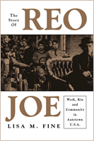

<body bgcolor="#FFFFFF" text="#000000" link="#0000FF" vlink="#CC0000" alink="#CC0000"><center><hr width="350" size="1" align="center" noshade>A collision of history and memory<hr width="350" size="1" align="center" noshade><p><a href="https://cdcshoppingcart.uchicago.edu/Cart/ChicagoBook.aspx?ISBN=9781592132577&&PRESS=temple" target="_top">Buy this book!</a> | <a href="https://cdcshoppingcart.uchicago.edu/Cart/Cart.aspx?PRESS=temple" target="_top">View Cart</a> | <a href="https://cdcshoppingcart.uchicago.edu/Cart/Cart.aspx?PRESS=temple" target="_top">Check Out</a></p><p></p></center><!--none//--><h1>The Story of Reo Joe</h1>
<H2>Work, Kin, and Community in Autotown, U.S.A.</H2>
<h3>Lisa M. Fine</h3>
<P>cloth 1-59213-257-X $80.50, Jun 04, <FONT COLOR=#990033>Available</FONT>
<br>paper 1-59213-258-8 $29.95, Jun 04, <FONT COLOR=#990033>Available</FONT>
<br>Electronic Book 1-59213-788-1 $29.95 <FONT COLOR=#990033>Available</FONT>
<BR> 256 pp
6x9
7&nbsp;tables 17&nbsp;halftones
</P><h3 align="center"><P><font color="#996633">Cugnot Award of Distinction,
2005</font></P>
<P><font color="#996633">Selected for inclusion on the list of Michigan Notable Books,
2005</font></P>
<P><font color="#996633">Chosen by the Adult Non-fiction Committee of the Society of Midland Authors as the first runner-up,
2004-5</font></P>
</H3>
<BLOCKQUOTE><I>"Insightful, engaging, and important, </i>The Story of Reo Joe<i> is a terrific book. Fine brings into the spotlight the sort of workers&#151overwhelmingly white, Anglo-Saxon Protestant male farmers&#151who played such a pivotal role in industrial history but who, because of their homogeneity, are largely overlooked. Fine's extraordinarily sensitive portrayal of Reo Joe makes us understand and care about the working people of Lansing. [We] see their lives as they saw them, celebrate their victories, and feel their losses."</i>
<br>&#151<b>Kevin Boyle</b>, author of <i>The UAW and the Heyday of American Liberalism, 1945-1968</i><i></I></BLOCKQUOTE>
<p>The Reo Motor Car Company operated in Lansing, Michigan, for seventy years, and encouraged its thousands of workers to think of themselves as part of a factory family. Reo workers, most typically white, rural, native-born Protestant men, were dubbed Reo Joes. These ordinary fellows had ordinary aspirations: job security, decent working conditions, and sufficient pay to support a family. They treasured leisure time for family activities (many sponsored by the company), hunting, and their fraternal organizations. Even after joining a union, Reo Joes remained loyal to the company and proud of the community built around it.
<p>Lisa M. Fine tells the Reo story from the workers' perspective on the vast social, economic, and political changes that took place in the first three quarters of the twentieth century. Lisa Fine explores their understanding of the city where they lived, the industry that employed them, and the ideas about work, manhood, race, and family that shaped their identities. <i>The Story of Reo Joe</i> is, then, a book about historical memory; it challenges us to reconsider what we think we know about corporate welfare, unionization, de-industrialization, and working-class leisure.
<BR>&nbsp;<h2>Excerpt</h2><P>Excerpt available at <a href="http://www.temple.edu/tempress">www.temple.edu/tempress</a></p>
<BR>&nbsp;<h2>Reviews</h2>
<p><i>"This superb social history illuminates the lived experience of class in towns and cities throughout the twentieth-century Midwest. Fine's attention to the bonds of manhood forged in and out of the workplace and to the power of the imagined Reo factory family offers an important new perspective on labor history."</i>
<br>&#151<b>Nancy Gabin</b>, Purdue University
<p><i>"Fine traces workers and their relationship to their community, their family, women and their bosses with a combination of scholarship and theories from...modern gender history. The result is a work that is readable, occasionally funny, and sensitive and respectful of her subjects."</i>
<br>&#151<b><i>Industrial Worker</i></b>
<p><i>"Fine's admirable case study enriches our social description of American autoworkers, underscores how their sense of manhood shaped and reshaped their lives, and generally enriches our knowledge and understanding of American autoworkers."</i>
<br>&#151<b><i>Michigan Historical Review</i></b>
<p><i>"Fine presents a well-researched case, and her emphasis on the racial and gender components of worker identity enrich labor history."</i>
<br>&#151<b><i>The Journal of American History</i></b>
<p><i>"This timely and engaging history of the Reo Motor Car Company represents a valuable contribution to the work of labor historians trying to analyze the phenomenon of conservatism in many working-class communities in the United States.... Fine uses oral histories to good effect..."</i>
<br>&#151<b><i>Labor History</i></b>
<p><i>"[L]abor educators may benefit from [the book] as a way to understand both how the local context impacts worker behavior and political activities. The study of Reo Joe may offer insight into understanding the conservative tendencies of significant segments of the American working class."</i>
<br>&#151<b><i>Labor Studies Journal</i></b>
<p><i>"Lisa M. Fine's book aims to be a different type of labor history, and on all accounts it succeeds.... This sweep and scope give the narrative a different flavor and set of findings than other works and brings to the fore elements of working-class history such as whiteness, maleness, and conservatism that are often handled far less empathetically than Fine does here."</i>
<br>&#151;<b><i>American Historical Review</i></b>
<p><i>"Lisa M. Fine has done something both unusual and difficult. She has written a social history of a small-to-medium-sized factory in a small-to-medium-sized Midwestern city.... This is the sort of labor history that economic historians will find useful, and interesting... a fine work."</i>
<br>&#151;<b>EH.net</b>
<p><i>"Lisa Fine's study [is] excellent...The author deftly interweaves the story of the firm and the story of its workers...Any book with enough thick description of the lives of working people that it could credibly be used to sustain multiple interpretations is a scholarly achievement. Even readers who see the story differently from the author will find this a vivid and thought-provoking narrative."</i>
<br>&#151;<b><i>The Journal of Social History</i></b>
<BR>&nbsp;<h2>Contents</h2><P>
<p>Acknowledgments
<br>Introducing Reo Joe in Lansing, Michigan
<br>1. Making Reo and Reo Joe in Lansing, 1880-1929
<br>2. Reo Joe and His Big Factory Family, 1904-1929
<br>3. Reo Joe's New Deal, 1924-1939
<br>4. Reo Rebellions, 1939-1951: Wars, Women, and Wobblies
<br>5. A Cold War Factory Family
<br>6. The "Fall" of Reo, 1955-1975
<br>Epilogue: Reo of the Mind
<br>Appendix: Tables
<br>Notes
<br>Index
</P><BR>&nbsp;<H2>About the Author(s)</H2>
<table><tr><td valign="top"><img src="/tempress/authors/1651_au.gif" height="90" width="75"></td><td width="100%" valign="middle"><p><b>Lisa M. Fine</b> is Associate Professor of History at Michigan State University. She is the author of <i><a href="498_reg.html" target="_top">Souls of the Skyscraper: Female Clerical Workers in Chicago, 1870-1930</a></i> (Temple), and coeditor, with Mary Anderson, Kathleen Geissler, and Joyce Ladenson, of <i>Doing Feminism: Teaching and Research in the Academy</i>.</P></td></tr></table>
<BR><H2>Subject Categories</H2>
<p><A HREF="/tempress/history.html" TARGET="_top">History</a>
<BR><A HREF="/tempress/labor.html" TARGET="_top">Labor Studies and Work</a>
<BR><A HREF="/tempress/gender.html" TARGET="_top">Gender Studies</a>
</p>
<BR><h2 class="inpageheading">In the series</H2>
<P><I><a href="http://www.temple.edu/tempress/critical.html" onMouseOver="window.status='Click for other books in this series!'; return true;" onMouseOut="window.status=''; return true;" target="_top">Critical Perspectives on the Past</a></i>, edited by <a href="http://www.temple.edu/tempress/authors/benson_memoriam.html" target="_top">Susan Porter Benson</a>, Stephen Brier, and Roy Rosenzweig.
</p><p><i>Critical Perspectives on the Past</i>, edited by Susan Porter Benson, Stephen Brier, and Roy Rosenzweig, is concerned with the traditional and nontraditional ways in which historical ideas are formed. In its attentiveness to issues of race, class, and gender and to the role of human agency in shaping events, the series is as critical of traditional historical method as content. Emphasizing that history is itself an interpretation of material events, the series demonstrates that the historian's choices of subject, narrative technique, and documentation are politically as well as intellectually constructed.</p>
<p align="center"><a href="https://cdcshoppingcart.uchicago.edu/Cart/ChicagoBook.aspx?ISBN=9781592132577&&PRESS=temple" target="_top">Buy this book!</a> | <a href="https://cdcshoppingcart.uchicago.edu/Cart/Cart.aspx?PRESS=temple" target="_top">View Cart</a> | <a href="https://cdcshoppingcart.uchicago.edu/Cart/Cart.aspx?PRESS=temple" target="_top">Check Out</a></p><p><font face="Arial" size="1"><a href="copyright.html" onMouseOver="window.status='Web Copyright Policy';return true;" onMouseOut="window.status=''" title="Web Copyright Policy">&copy;</a> 2015 <a href="http://www.temple.edu" target="new" onMouseOver="window.status='Link to Temple University home page';return true;" onMouseOut="window.status=''" title="Link to Temple University home page">Temple University</a>. All Rights Reserved. http://www.temple.edu/tempress/titles/1651_reg.html</font></p>